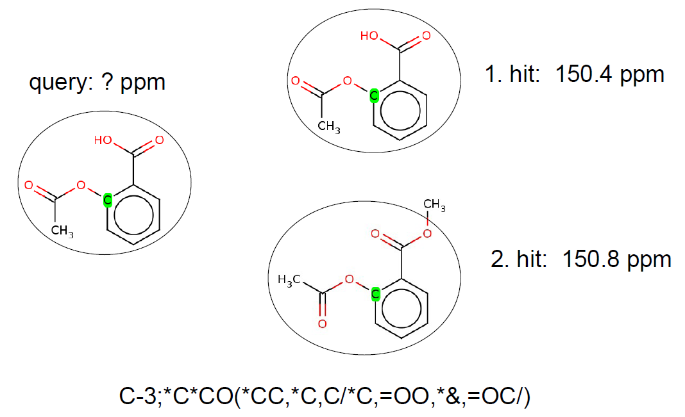
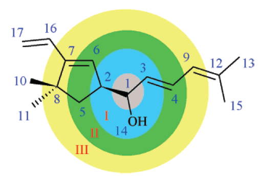

The current version of NMRPredictor employs the combination of two basic methods (similarity search based on HOSE code technology and QSPR modeling) for chemical shift prediction. After a concise introduction to the HOSE code technology, QSPR descriptors and decision tree-based QSPR modeling we will show how the HOSE and QSPR approaches can be merged in order to obtain an accurate and robust chemical shift prediction model.
The HOSE code technology is often used to describe the chemical environment of a selected atom up to a certain radius. Atoms with the same HOSE code are assumed to have similar chemical shift values. The larger the radius of the common HOSE code is the more similar the chemical shifts are. If we have a database containing HOSE codes as keys and corresponding experimental chemical shifts as values we can predict chemical shift values based on similarity search.
Example:
Two kind of descriptor sets were implemented for chemical shift prediction: "sum" (for 1H NMR) and "detailed" (for 13C NMR). Both of them are based on a traversal of the molecule graph starting from a selected atom (focus atom, this is the atom whose chemical shift needs to be predicted). After identifying the neighbors of the focus atom in the different spheres (see the figure below) we count the occurrences of previously defined atom types in the different spheres. The current implementation employs 6 spheres around the focus atom and an additional sphere containing the rest of the atoms. Currently 40 atom types are handled by the descriptor computation. Number of ring closures and hydrogen atoms in a given sphere are added to the 40 atom type counts for each sphere. The same procedure is repeated for atoms belonging to one of the pi-electron systems of the molecule. Thus the total number of the chemical shift descriptors equals 2*(6+1)*(40+2) = 588. In addition to the descriptors of the sum model, the detailed model also utilizes 8 physicochemical descriptors (valence, period, electronegativity, van der Waals radius, hybridization, bond type to previous atom, number of protons attached, ring closure count) to characterize atoms of the inner (in our case only for the first) spheres. The rest of the spheres are described by the previously outlined method. Thus the detailed model generates 2*6*(40+2)+4*8 = 536 descriptors for 13C NMR chemical shift prediction.
In order to reach a better chemical shift prediction accuracy the following clusters have been introduced:
In order to predict chemical shifts accurately, we combined the decision tree-based and HOSE models as follows:
The training and test chemical shift data were obtained from NMRShiftDB, see the link http://nmrshiftdb.nmr.uni-koeln.de/ for further details.